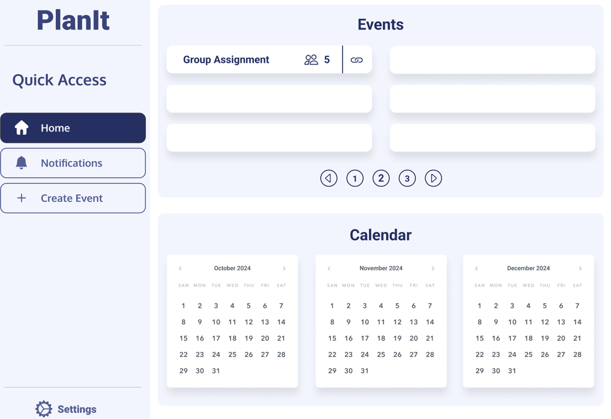
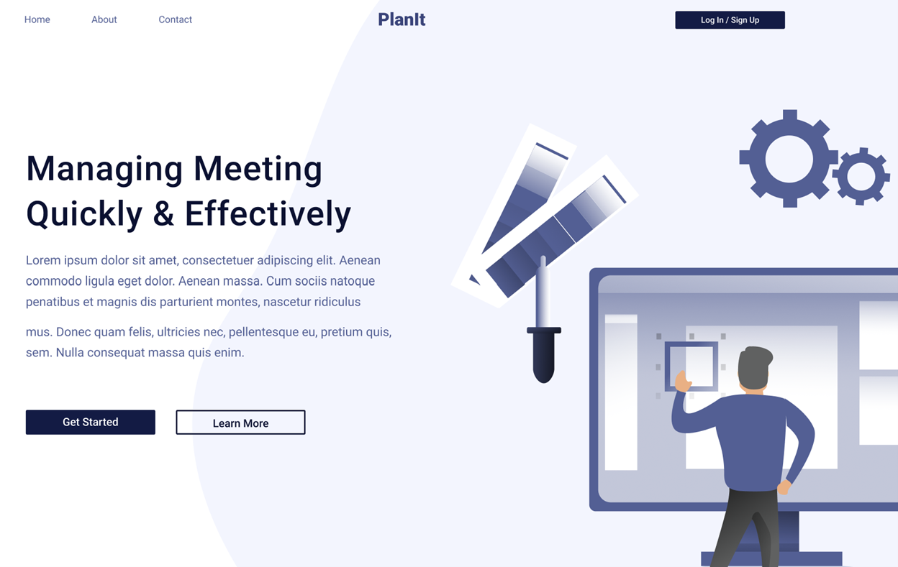

PlanIt
A streamlined platform that helps teams coordinate events, manage tasks, and hit deadlines on time.
PlanIt centralizes calendars, notifications, and event details, ensuring every member has
quick access to schedules and updates. By combining a minimal, intuitive interface with powerful
collaboration features, PlanIt reduces confusion and encourages productivity. Ideal for small
study groups or large organizational teams, PlanIt keeps everyone aligned in one convenient hub.
Key Features:
- Unified dashboard with upcoming events and quick access shortcuts
- Real-time notifications for newly added or updated tasks
- Simple event creation and participant management
- Built-in chat or messaging to keep conversations centralized
Technologies:
- React.js for front-end UI
- Node.js & Express for back-end API
- MongoDB for data storage
- Deployed via AWS for scalability

